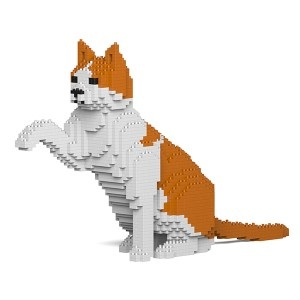

Les balises de mises en valeur
Bonjour, ceci est mon premier fichier HTML, alors, soyez indulgents !
Bonjour, ceci est mon premier fichier HTML, alors, soyez indulgents !
Bonjour, ceci est mon premier fichier HTML, alors, soyez indulgents !
Les listes
Les listes non ordonnées
- Chats
- Chiens
- Lapins
- Moutons
- Poules
Les listes ordonnées
- Poissons
- Chevaux
- Vaches
- Canards
- Coqs
Les couleurs
H
T
M
L
La balise <a>
Maillage interne
Vers le fichier 02
Maillage externe
Lien vers le site l' Equipe
Barre de navigation
La balise image <img>

Sculpture en légos de Rodin, nommée " Le chat qui salue"